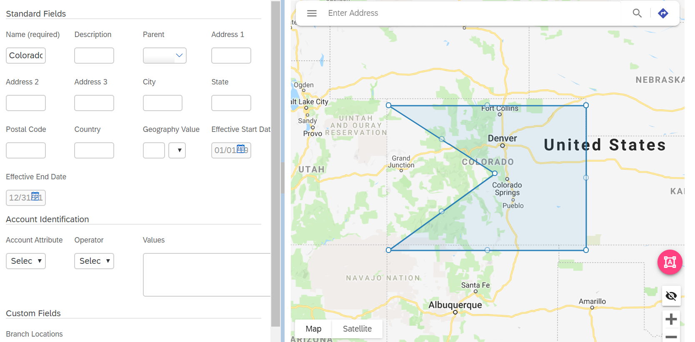

Features¶
Select Geographic Features¶
You can select multiple geographic features, including:
Road
Transit
Landscape
Water
Points of interest
Heat Map of Accounts¶
By toggling the button shown in the showMapViewerWidget(), you can view the Accounts associated with a Geography based on the longitude and latitude of the Account within the area of the Polygon.
Data on Hover¶
By hovering over a Geography, user can view information about each account.
External Data Source Assignment¶
By click on the “Upload KML/KMZ” button, you can upload a file to assign a Polygon to a Geography.
Screen Shots¶
